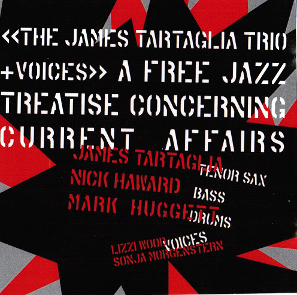

A Free Jazz Treatise Concerning Current Affairs (2003)
Although the extreme free jazz idiom this album employs was never many people’s cup of tea, to
say
the least, I think you can still hear the buzz that existed in the recording studio, and, on the
three live versions, in a pub on New Oxford Street, just up from the British Museum. To my
working
trio of Haward and Huggett, I added actors / singers Lizzi Wood and Sonja Morgenstern; Sonja
would
go on to be the Jazz-Philosophy Fusion vocal pioneer. As the title suggests (derived from David
Hume’s two most famous books), I’d started thinking about Jazz-Philosophy Fusion, although I
don’t
think this really counts yet. It was inspired by the news stories we were all being bombarded
with
at the time: paedophile priests being ‘forgiven’ by their churches, rather than reported to the
police, hysteria about economic migrants ‘pretending’ to be asylum seekers so they could
‘invade’
the UK, the Israeli-Palestinian peace process seeming anything but peaceful, and our government
telling us that Saddam Hussein had weapons of mass destruction he could deploy in 45 minutes.
‘Paedophile Priest’ tries to be as disgusting as the theme requires, while commenting on the
incomprehensibility of anyone, apart from a cartoon villain, actually acting in such a manner;
at
the end of the track, we jeer at the hypocrisy with some liberal use of a creepy old Blind Lemon
Jefferson number. ‘Asylum Seeker’ and ‘Economic Migrant’ are two different takes of the same
ballad,
in comment upon the vilification of the latter at the time. The album was reviewed positively in
Jazz Journal magazine; the one I used to read avidly as a teenager.